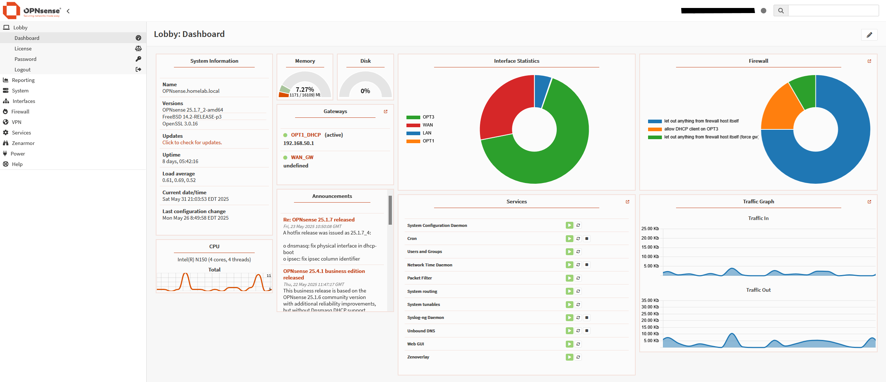

This project began with a simple objective: gain hands-on experience deploying and configuring an enterprise-grade firewall solution. Over time, it evolved into a comprehensive network security implementation that encompasses traffic monitoring, packet analysis, and network segmentation within my home laboratory environment, serving as a practical application of defense in depth security principles.
While admittedly overkill for a residential network—especially given my low-risk security profile and good security hygiene practices—this project provided valuable learning opportunities and practical experience with enterprise security technologies. The decision was driven by curiosity, it was an area of interest, and I could do it, so I did.
OPNsense and pfSense are both major open-source next-gen firewall and routing software options, based on FreeBSD with OPNsense being a fork of pfSense. The systems offer basically the same functionality, and performance. After reading a few comparison reviews online, I chose to go with OPNSense for my home network.
I implemented the firewall using a transparent bridge configuration, which allows my primary router to maintain direct access to the WAN IP address from my ISP. This design choice eliminated potential double NAT complications that could interfere with family members’ applications and provided an opportunity to compare Layer 2 versus Layer 3 firewall operations.
I first installed OPNSense on a vm and once I gained some confidence, moved to dedicated hardware.
The implementation required minimal hardware considerations, just a PC with dual Ethernet network interface cards. My home internet service is 1 gigabit fiber optic. I saw no need to upgrade to 2.5 gb network ports. The PC only has a N150 Notebook CPU in it, and even running the Zenarmor Plugin CPU utilization hovers around 3%. The PC has built-in wireless interface which serves as the third network interface for the administrative console access.
Through implementation, I discovered firewalls can operate under two primary approaches:
Initially, I attempted the default deny approach but quickly realized the complexity of managing allow rules for numerous applications across the network. The potential for disrupting family members’ activities (such as video calls during important meetings) led me to adopt the default allow approach, which proved more practical for home environments.
Create network aliases (LAN net, IoT net, etc.) through Firewall > Aliases for improved rule management and readability.
Planning to integrate with Splunk for enhanced log analysis and security event correlation, which will provide deeper insights into network traffic patterns and potential security incidents.
I have no desire to install a certificate on my clients at this time so I will not being using the TLS inspection options in OPNsense or Zenarmor. Maybe a long time in the future.
That’s it!